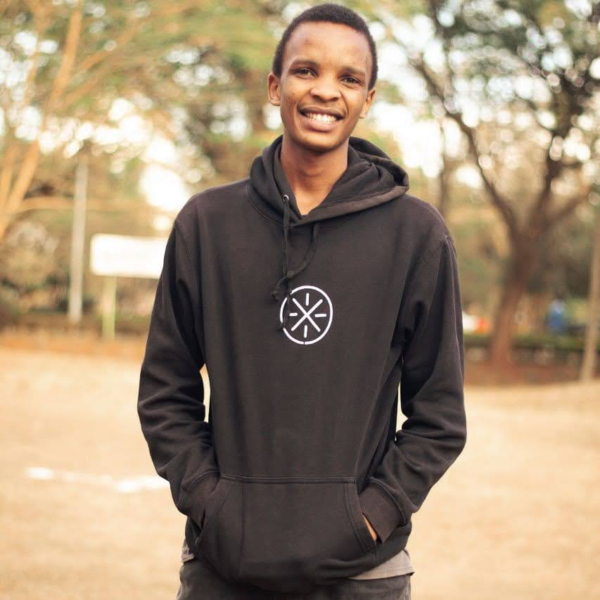

Dominic Makana Ocharo
Portfolio Website
Welcome to my digital space! I am Dominic Makana Ocharo, a versatile professional with expertise in Telecommunications Engineering, Data Science,
Data Analysis, Power Apps Development, and Networking. Leveraging my academic background from Jomo Kenyatta University of Agriculture and
Technology, I bring over five years of hands-on experience to the tech arena. Explore my journey, skills, and projects as we delve into the
dynamic world of innovation and technology. Get me on Linkedin:
@Dominic Ocharo